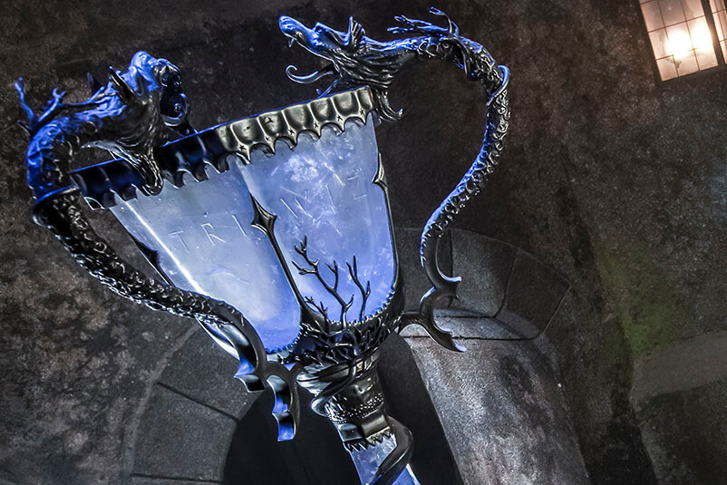

Attractions
The Forbidden Journey
Make your way through Hogwarts School of Witchcraft and Wizardry. Then soar above the castle grounds as you join Harry Potter and his friends on an unforgettably thrilling adventure, comming face-to-face with magical creatures.
Fight of the Hippogriff
A Hippogriff is a magical creature that has the front legs,wings and head of a giant eagle and body,hind legs,and a tail of a horse. Fight of the Hippogriff is a family-friendly roller coaster that spirals and dives around the pumpking patch.
Entertainment
Dark Arts at Hogwarts Castle
Darkness Falls on Hogwarts Castle-Preview it now during the select nights below.
As Darkness Falls,Dementors,Death Easters and the Other fearsome creatures cloak Hogwarts castle in the darker side of magic.
Preview the new Dark rts at Hogwarts Castle on ominous spectacle of light and music starting April 13,and select night.
April 13-28
May 25-27

Halloween Night
Halloween Function;the most special function in Wizard world.Peaple dress as ghosts,monters and dark spirts.This festival is hold on 31st of October.

Wand Magic
With a gentle flick of the wrist and just the right touch,visitors can cast spells thoughout The Wizarding World of Harry Potter at all-new wand magic locations.

Olivander's
Experience Olivander's ,Market of Fine Wands since 382 BC,where you can see a wand choose a wizard.
Frog Choir
Hear the vocal styling of this small choir of Hogwarts students,accompanied by the smooth bass rumbles giant throaty frogs.

Triwizard Spirit Rally
Cheer on the colorful procession of students from the legendary schools of Hogwarts, Beauxbatons and Durmstrang as they lead the excitement for the Triwizard Tournament.
Dining

Three Broomsticks
This rustic tavern is the place to go in Hogsmead for good food,friendly conversation, and a Butterbeer. Take a seat and have your fill of tasty British fare including the 'Great Feast', Fish & Chips, Shepherd's Pie, Cornish Pasties, Turkey Legs, and Fresh Vegetables.
Hog's Head
Located in the back of Three Broomsticks in Hogsmead. This is the place to stop in for a Butterbeer and Pumpking Juice ,along with domestic and imported beers,specialty drinks,wine,spirits, and mixed drinks.

Magic Neep Cart
Fresh Fruit, Cold Beverages, Bottled Beers and Snacks.
Shopping
Ollivander's
Visit Ollivander's , Market of Fine Wands since 382 BC.

Honeydukes
A must-stop for visitors to Hogsmeade ,at Honeydukes the shelves are lined with all manner of colorful sweets , inluding Acid Pops, Exploding Bonbons, Peppermint Toades, Fudge Files,Fizzing Whizzbees, and Chocolate Frogs, which contain a wizard trading card in each box.

Owl Post
The owl post sells a variety of stationary, writing implements, and The wizarding world of Harry Potter stamps, as well as owl-related toys and gifts.
Zonko's Joke Shop
Zonko's is your destination for novelty items, jokes and toys.
Dervish and Bangers
Be sure to stop at Dervish and Banders for such magical items as Spectrespecs and The Monster Book of monsters.Dervish and Bangers carries all your Quidditch needs including T-shirts, Quaffles, Golden Snitches and Brooms including the Nimbus 2001 and Firebolt.
Filch's Emporium of Confiscated Goods
Here you can see confiscated items like the Marauder's Map and purchase souverirs like T-shirts,jackets, Sweatshirts, bags, Caps, Pins, Keychains, Plush toys Glassware,Jewelry,Travel Accessories,Collctibles, stationary, Books and an Assortment of other fine gifts.
Wiseacre's Wizarding Equipment
At wiseacre's wizarding equipment, visitors will find house robes, Platform 9 3/4 train station items , Hogwarts Express items , and a variety of wizarding wares and supplies.
Gladrags wizardware
Here guests will find a variety of fashionable wizardware such as authentic wizards robes and accessories, as well as other apparel and jewelry fashion items inspired by the four school houses.
Hogsmead Station
Among the towering stacks of lost luggage and traveling parcels you'll discover magical Platform 9 3/4 -branded items including train tickets, wallets, passport cases, backpacks, blankets,mugs, photo frames, jewelry and more!